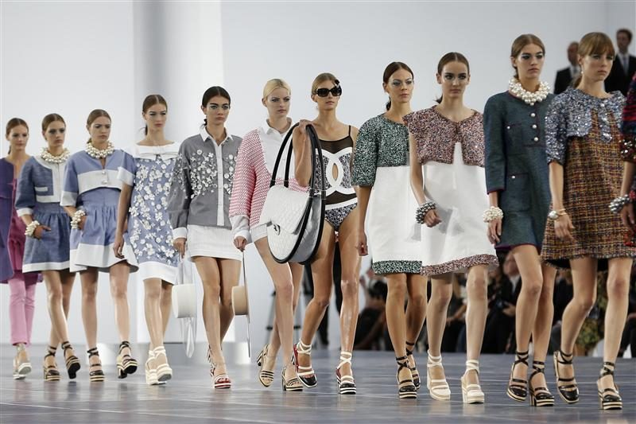

From classic perfumes to the iconic little black dress, CHANEL is undoubtedly one of the most iconic fashion houses of all time. As the timeless fragrance, CHANEL No. 5, marks its 100th birthday in 2021, it’s a good time to take a look back into the history of CHANEL.
Chanel
